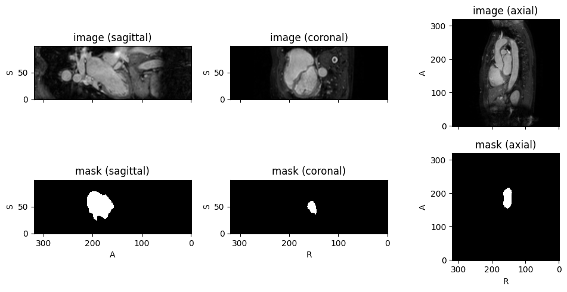

from fastMONAI.vision_all import *
from monai.apps import DecathlonDatasetPatch-Based Inference: Deploying on New Scans
Sliding-window inference for 3D medical image segmentation using fastMONAI’s
PatchInferenceEngine.

Load new scans
Load the Decathlon Heart test set (imagesTs/) the same way as the standard inference tutorial. These scans have no labels, which is exactly the deployment setting: we run the model on data it has never seen and for which no ground truth exists.
path = Path('../data')
path.mkdir(exist_ok=True)task = "Task02_Heart"
test_data = DecathlonDataset(root_dir=path, task=task, section="test",
download=True, cache_num=0, num_workers=3)2026-06-30 13:36:07,781 - INFO - Verified 'Task02_Heart.tar', md5: 06ee59366e1e5124267b774dbd654057.
2026-06-30 13:36:07,781 - INFO - File exists: ../data/Task02_Heart.tar, skipped downloading.
2026-06-30 13:36:07,782 - INFO - Non-empty folder exists in ../data/Task02_Heart, skipped extracting.test_imgs = [data['image'] for data in test_data.data]
print(f"New scans to segment: {len(test_imgs)}")
test_imgs[:5]New scans to segment: 10['../data/Task02_Heart/imagesTs/la_015.nii.gz',
'../data/Task02_Heart/imagesTs/la_025.nii.gz',
'../data/Task02_Heart/imagesTs/la_013.nii.gz',
'../data/Task02_Heart/imagesTs/la_001.nii.gz',
'../data/Task02_Heart/imagesTs/la_027.nii.gz']Load the inference configuration
Read preprocessing and sliding-window settings directly from the Safetensors artifact. The embedded contract includes only values used during inference:
- apply_reorder: Whether to reorder to RAS+ orientation
- target_spacing: Target voxel spacing for resampling
- patch_size, patch_overlap, aggregation_mode: Sliding-window parameters
- normalization and postprocessing: The transforms and decisions required at deployment
Training-only sampling and queue settings are deliberately absent.
# Option 1: use the local artifact created by tutorial 12b.
model_path = Path('models/final_model.safetensors')
# Option 2: download the final artifact from MLflow (uncomment to use).
# import mlflow
# run_id = "your_run_id" # the final_all_data run, from the MLflow UI
# model_path = Path(mlflow.artifacts.download_artifacts(
# run_id=run_id, artifact_path="model/final_model.safetensors", dst_path="./"))
metadata = read_safetensors_metadata(model_path)
if metadata['artifact_role'] != 'final':
raise ValueError(f"Expected a final model artifact, got {metadata['artifact_role']!r}")
inference_config = metadata['inference_config']
if inference_config.get('workflow') != 'patch':
raise ValueError("The model does not contain a patch inference configuration")
config_dict = inference_config['patch_config']
print("Loaded inference configuration from Safetensors metadata:")
for key, value in config_dict.items():
print(f" {key}: {value}")patch_config = PatchConfig(**config_dict)Load the final model
Strictly load the same Safetensors artifact whose metadata supplied the inference configuration. The allow-listed model specification rebuilds the architecture before its tensors are loaded.
device = torch.device('cuda' if torch.cuda.is_available() else 'cpu')
model = load_model_artifact(model_path, device=device)
model.eval()
print(f"Loaded model: {model.__class__.__name__}")
print(f"Device: {device}")Normalization (loaded from Safetensors metadata)
Normalization is part of the embedded inference contract, so it is already present in patch_config and is applied automatically. Nothing needs to be re-specified here.
If predictions appear mirrored, rotated, or wrong, check that
apply_reorder,target_spacing, andnormalizationin the model metadata match the intended deployment. To override, passpre_inference_tfms=explicitly.
# Normalization is already in the loaded config and applied automatically:
print("Normalization from config:", patch_config.normalization)Normalization from config: [{'name': 'ZNormalization', 'masking_method': 'foreground', 'channel_wise': True}]Create PatchInferenceEngine
The engine runs the sliding-window inference pipeline: 1. Load and preprocess the image (reorder, resample, normalize) 2. Pad if image is smaller than patch size 3. Extract overlapping patches with GridSampler 4. Predict on batches of patches 5. Reconstruct full volume with GridAggregator using Hann windowing
sw_batch_size defaults to 1 for memory-safe 3D inference. On a GPU, benchmark larger values such as 2 or 4 and use the fastest value that leaves sufficient VRAM.
engine = PatchInferenceEngine(
learner=model,
config=patch_config,
)Single image inference
Use engine.predict() to predict on a single image. These examples enable 8-flip TTA; pass tta=False for a faster single-pass prediction.
test_path = test_imgs[0]
pred, affine = engine.predict(test_path, return_affine=True, tta=True)
print(f"Input: {test_path}")
print(f"Prediction shape: {pred.shape}")
print(f"Unique values: {torch.unique(pred).tolist()}")Input: ../data/Task02_Heart/imagesTs/la_015.nii.gz
Prediction shape: torch.Size([1, 320, 320, 100])
Unique values: [0, 1]Batch inference
Use patch_inference() to predict on multiple images with optional NIfTI output.
predictions = patch_inference(
learner=model, # the engine also accepts a raw model (here learn.model)
config=patch_config,
file_paths=test_imgs,
save_dir='predictions/patch_heart',
progress=True,
tta=True
)
print(f"\nGenerated {len(predictions)} predictions")
print(f"Saved to: predictions/patch_heart/")
Generated 10 predictions
Saved to: predictions/patch_heart/Optional: ensemble explicitly selected cross-validation models
The cross-validation notebook (12b) trains one model per configured fold. Instead of deploying only the single all-data model, you can explicitly select any intentional set of those models as an ensemble and average their predictions. This tutorial declared five folds, but the inference engine does not require five members.
fastMONAI uses soft voting. Each model runs the full sliding-window pass, the per-patch class probabilities are averaged across the models, and the final label map comes from a single argmax on the averaged probabilities. Averaging happens inside PatchInferenceEngine, so you pass a list of models instead of one.
Prerequisite: declare the exact MLflow run IDs for at least two intentionally selected fold models. All selected models must carry the same embedded inference contract; no ensemble members are inferred automatically.
Load the explicitly selected fold models
Each fold run from 12b logged model/best_model.safetensors to MLflow. Declare the exact run ID for every model you intentionally want in the ensemble. find_model_artifacts downloads those artifacts without guessing membership from an experiment or filename pattern. The embedded inference contracts are checked against the all-data model before any model is loaded.
# Explicitly declare ensemble membership; copy the run IDs from the MLflow UI.
# This tutorial trained folds 1-5, but an ensemble may contain any intentional N > 1.
ensemble_run_ids = {
# "fold_1": "<mlflow-run-id>",
# "fold_2": "<mlflow-run-id>",
# "fold_3": "<mlflow-run-id>",
# "fold_4": "<mlflow-run-id>",
# "fold_5": "<mlflow-run-id>",
}
if ensemble_run_ids:
if len(ensemble_run_ids) < 2:
raise ValueError("An ensemble requires at least two explicitly selected models")
fold_artifacts = find_model_artifacts(
run_ids=ensemble_run_ids,
artifact_role="best",
expected_members=list(ensemble_run_ids),
)
fold_metadata = {}
for member, artifact in fold_artifacts.items():
metadata = read_safetensors_metadata(artifact)
if metadata["artifact_role"] != "best":
raise ValueError(f"{member!r} is not a best-model artifact")
if metadata["inference_config"].get("workflow") != "patch":
raise ValueError(f"{member!r} does not contain a patch inference contract")
fold_metadata[member] = metadata
reference_member = next(iter(ensemble_run_ids))
ensemble_inference_config = fold_metadata[reference_member]["inference_config"]
for member in ensemble_run_ids:
if fold_metadata[member]["inference_config"] != ensemble_inference_config:
raise ValueError(
f"{member!r} has a different inference contract; "
"do not combine these models"
)
ensemble_patch_config = PatchConfig(**ensemble_inference_config["patch_config"])
fold_models = [
load_model_artifact(fold_artifacts[member], device=device)
for member in ensemble_run_ids
]
print(f"Loaded {len(fold_models)} explicitly selected Safetensors models")
else:
fold_models = None
print("Add at least two exact fold run IDs to ensemble_run_ids to run this optional section")Run the ensemble
Pass the list of fold models to patch_inference (or PatchInferenceEngine) exactly like a single model. Predictions are written to a separate folder so they sit alongside the single-model outputs.
if fold_models is not None:
# Pass the list of models: the engine averages their softmax probabilities per patch
# (soft voting), then applies a single argmax + keep_largest_component, as in training.
ensemble_predictions = patch_inference(
fold_models,
config=ensemble_patch_config,
file_paths=test_imgs,
save_dir="predictions/patch_heart_ensemble",
progress=True,
tta=True
)
print(f"\nEnsemble: generated {len(ensemble_predictions)} predictions")
print("Saved to: predictions/patch_heart_ensemble/")
# Single-image ensemble: same call, just pass the list to PatchInferenceEngine
ensemble_engine = PatchInferenceEngine(
fold_models, config=ensemble_patch_config
)
pred_ens = ensemble_engine.predict(test_imgs[0], tta=True)
print(f"Ensemble prediction shape: {pred_ens.shape}, unique values: {torch.unique(pred_ens).tolist()}")Visualize predictions
There is no ground truth for these scans, so we overlay the predicted mask on the input volume and inspect it qualitatively with TorchIO’s Subject.plot.
from torchio import Subject, ScalarImage, LabelMap
idx = 0
img_fn = test_imgs[idx]
# patch_inference saves each prediction as '<stem>_pred.nii.gz' in save_dir, in the input's voxel space.
pred_fn = Path('predictions/patch_heart') / Path(img_fn).name.replace('.nii.gz', '_pred.nii.gz')
subject = Subject(image=ScalarImage(img_fn), mask=LabelMap(pred_fn))
subject.plot(figsize=(10, 5))
Summary
In this tutorial, we deployed the final patch-based model on new, unlabeled scans:
- Read Safetensors metadata: Load the embedded inference configuration so preprocessing and sliding-window settings match exactly
- Load Safetensors strictly:
load_model_artifact('models/final_model.safetensors')rebuilds the allow-listed architecture and returns an inference-ready module PatchInferenceEngine: Run one all-data model or an explicitly selected model listpatch_inference(): Batch inference with NIfTI output, then qualitative visualization with TorchIO’sSubject.plot